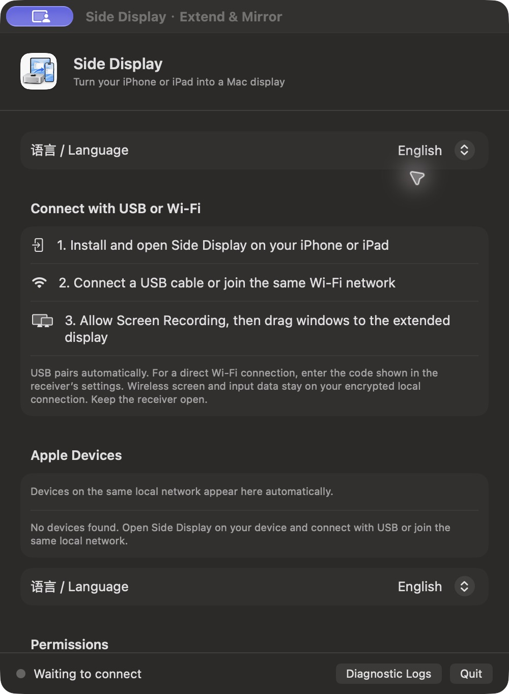
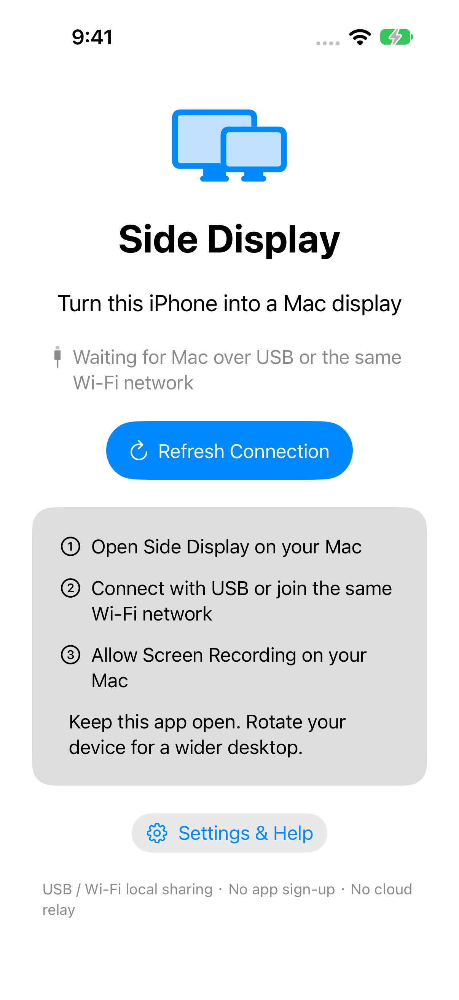
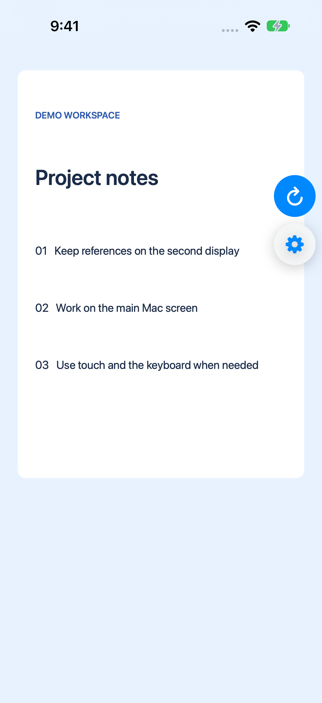
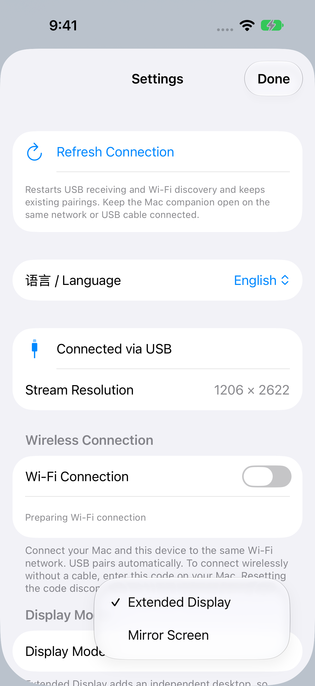
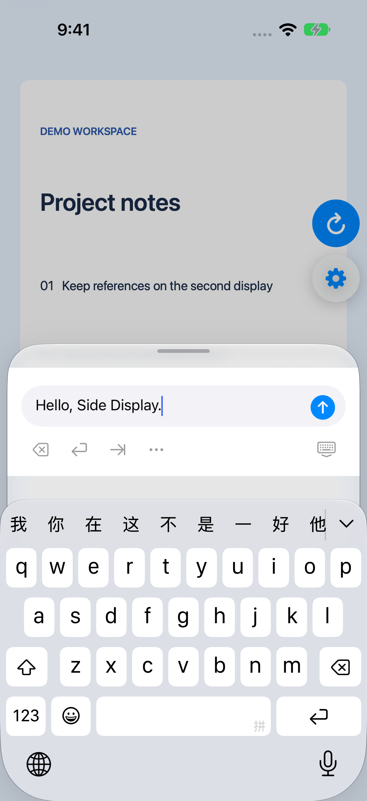

Side Display
A second screen for your Mac — including Mac mini — on your iPhone or iPad.
Connect a Mac, including Mac mini, to an iPhone or iPad over USB or the same Wi-Fi / local network. Extend your desktop for extra workspace, or mirror the main screen live. Use touch, the native keyboard and system dictation to control your Mac.
Features
| Feature | What you can do |
|---|---|
| Extended Display | Create a separate workspace for notes, references and other Mac windows |
| Mirror Screen | View the main Mac desktop live, including its menu bar, Dock and windows |
| USB and local Wi-Fi | Connect with a trusted USB data cable or pair on the same local network; wireless sharing is encrypted |
| Touch control | Tap, drag and use two fingers to scroll |
| Zoom and pan | Pinch to zoom, enable Pan Screen to explore the enlarged view, then return to desktop control |
| Keyboard and dictation | Edit text in the native input bar and send it to the Mac; use the system keyboard microphone for dictation |
| Automatic keyboard | Open the input bar when a supported editable Mac field is detected; manual keyboard access is also available |
| Floating settings | Move the Settings button to a comfortable position and let it dock to a screen edge |
| Two languages | Choose English, Simplified Chinese or System Default without restarting the connection |
If a cable or network connection drops, tap Refresh Connection in the receiver. Existing wireless pairings are kept.
How to use it
1. Open both apps
Install the Mac companion from the product website and the iPhone/iPad receiver from the App Store when officially released. Open both apps. Keep the receiving device unlocked and the app in the foreground. Grant Screen Recording permission on the Mac for display sharing and Accessibility permission for remote input.
2. Choose USB or Wi-Fi
For USB, connect a data-capable cable and trust the Mac when prompted. A trusted USB session can also save wireless pairing for later use.
For wireless, connect both devices to the same local network and allow Local Network access. The Mac can use Ethernet on the same router. For a first direct wireless connection, find the pairing code under the receiver's Settings → Wireless Connection, select the device on the Mac and enter that code. Keep pairing codes private.
3. Pick a display mode
Open the floating Settings button and select Display Mode. Choose Extended Display for a separate workspace; arrange its position in the Mac's Displays settings and drag windows onto it. Choose Mirror Screen to see the main desktop live.
4. Control, zoom and type
Tap and drag with one finger, or swipe with two fingers to scroll. Pinch to zoom. Enable Pan Screen to move around an enlarged desktop, then disable it to resume control. Reset View restores the display. Fill mode can crop edges when aspect ratios differ; showing the entire desktop can leave margins.
Tap a supported editable Mac field, enter text in the native input bar and press the send arrow. If the keyboard does not open automatically, choose Keyboard in Settings. Use the system keyboard microphone for dictation and review the text before sending. The globe key changes the keyboard language.
5. End the session
Choose Stop Receiving in the receiver's Settings or stop the connection on the Mac. If wireless discovery fails, check Local Network permissions, router isolation and whether the receiver is still in the foreground.
Launch the Mac companion at login
Enabled on first launch. Change it in Startup settings or macOS Login Items.
Free to use
Connect to your Mac to use mirroring, extended display and remote controls without a time limit.
Software screenshots
The Mac screenshot shows the companion app. The iPhone and iPad screenshots come from the free receiver build streaming a fictional sample workspace.
Mac companion: setup and permissions

iPhone: connection guide

iPhone: extended workspace

iPhone: extended and mirror modes

iPhone: native text input

iPad: a larger workspace

Requirements and limits
A Mac running macOS 14 or later with a signed-in desktop session, and an iPhone/iPad running iOS/iPadOS 16 or later. Keep the receiving device unlocked and in the foreground. Side Display cannot replace a physical screen for boot, FileVault, recovery or pre-login screens. Mac audio is not streamed.
Performance depends on encoding, resolution, network conditions and content. Select an appropriate quality level on the Mac. Dictation availability and language depend on the system keyboard. Previous physical iPhone acceptance exists; a real iPad and older supported operating systems still require validation. We do not claim every model has been physically tested.
The free, Developer ID signed and Apple-notarized Mac companion is available now: download the Mac app and corresponding source. The iPhone/iPad receiver is being prepared for App Store review and is not yet publicly available there.